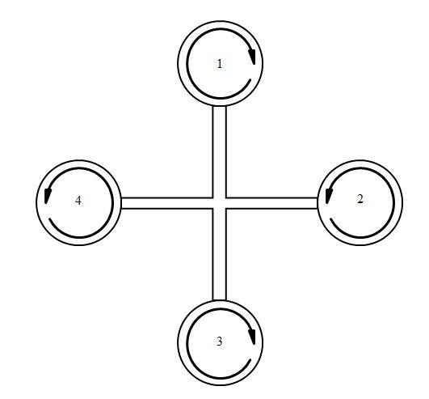
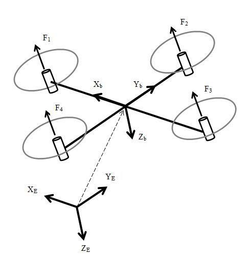
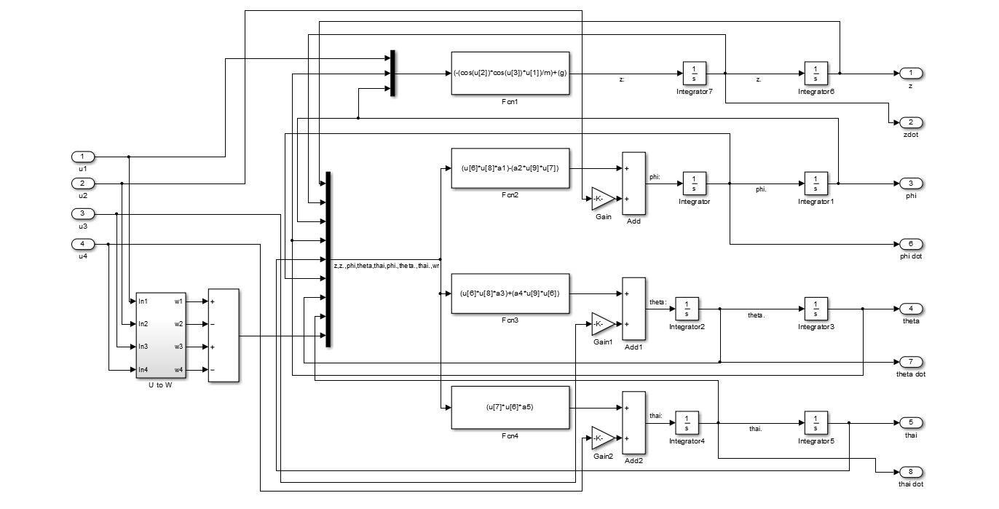
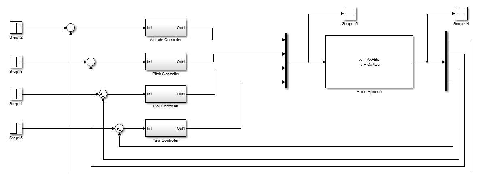
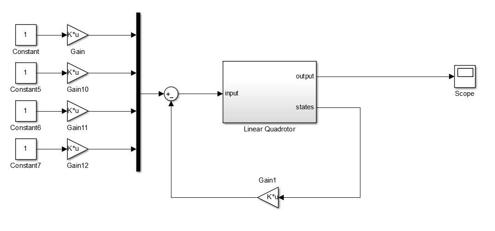
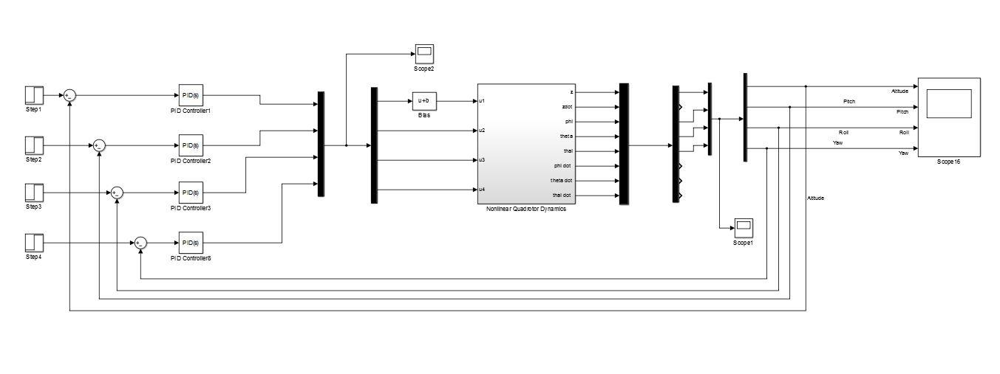
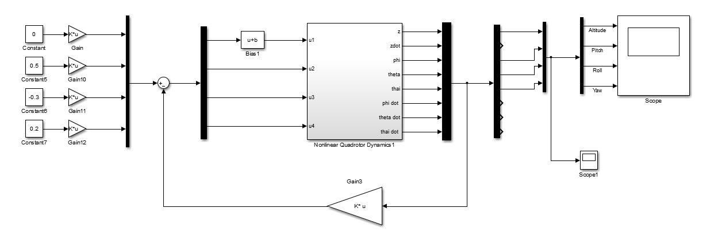
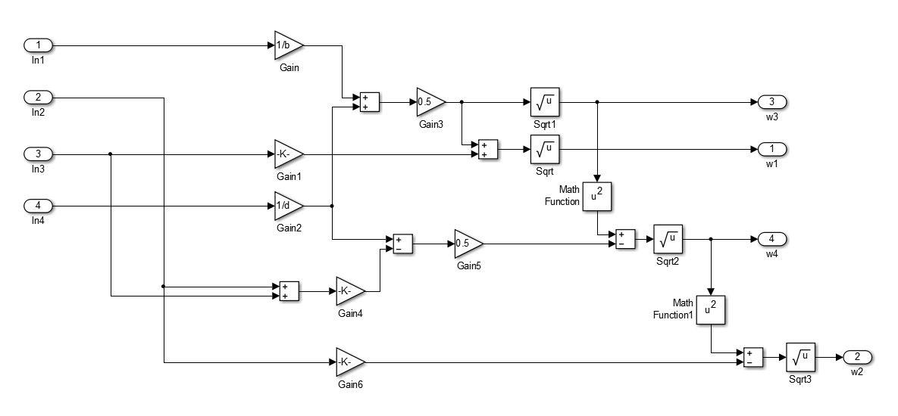
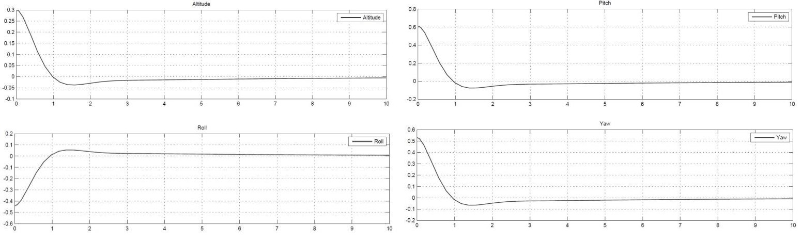
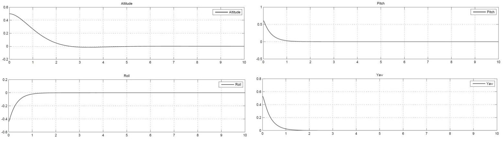

Quadrotor Hovering Stability and Control
A comparative study of linear control techniques for quadrotor hovering — PID, LQR, feed-forward tracking, and robust servomechanism — simulated on both linearized and nonlinear dynamics in Matlab/Simulink.
Overview
Quadrotors are multi-rotor UAVs that use four propellers to control full pose (position and orientation). Their nonlinear dynamics make hovering stability a classic control challenge — and a strong platform for comparing controller designs.
In this Advanced Control Systems project at Ryerson University (co-authored with Simon Lam), we derived a full kinematic and dynamic model using Newton–Euler formulation, linearized the altitude and attitude dynamics, verified controllability and observability, then designed and compared four linear control approaches. Every controller was simulated against both the linearized plant and the full nonlinear model.
📄 Full Project Report (PDF)Key Highlights
Full Dynamics Model
Newton–Euler kinematics and dynamics with 12-state pose formulation, then linearized for hover
PID Control
SISO-tuned and auto-tuned PID for altitude, pitch, roll, and yaw stabilization
LQR Design
Optimal state-feedback via Algebraic Riccati solution for fast attitude recovery
Tracking Controllers
Feed-forward constant tracking and robust servomechanism for constant and sinusoid references
Modelling & Analysis
The quadrotor was modelled with body and inertial frames, opposite rotor spin pairs for yaw torque balance, and control inputs mapped from rotor speeds to thrust and moments. Assumptions included rigid body/propellers, symmetry, thrust/drag proportional to rotor speed, and neglected translational drag and ground effect.
The hover-relevant state vector covers altitude and attitude with their rates. Controllability and observability matrices were full rank (8), with no transmission zeros overlapping tracking poles — satisfying the conditions for the controllers below.



Controllers
PID: Classical PID designed with a SISO approach (altitude, pitch, roll, yaw channels) and compared against Matlab auto-tuning. Auto-tune recovered faster; SISO was slower with almost no undershoot.
LQR: Linear Quadratic Regulator minimizing a quadratic cost; gains from the Algebraic Riccati equation. Attitude stabilization was particularly fast on the linear plant.
Feed-forward tracking: Constant reference tracking with strong altitude (~3 s) and attitude (~1 s) responses on the linear model.
Robust servomechanism: Augmented-system design for constant and sinusoid tracking with disturbance rejection — including sine-wave altitude tracking with constant attitude setpoints.





Results
All four methods stabilized both the linearized and nonlinear plants, with nonlinearities clearly degrading response quality relative to the linear case. Controllers differed mainly in settling time, undershoot, and tracking bandwidth — confirming that linear designs remain effective for hover when validated against the full nonlinear model.

